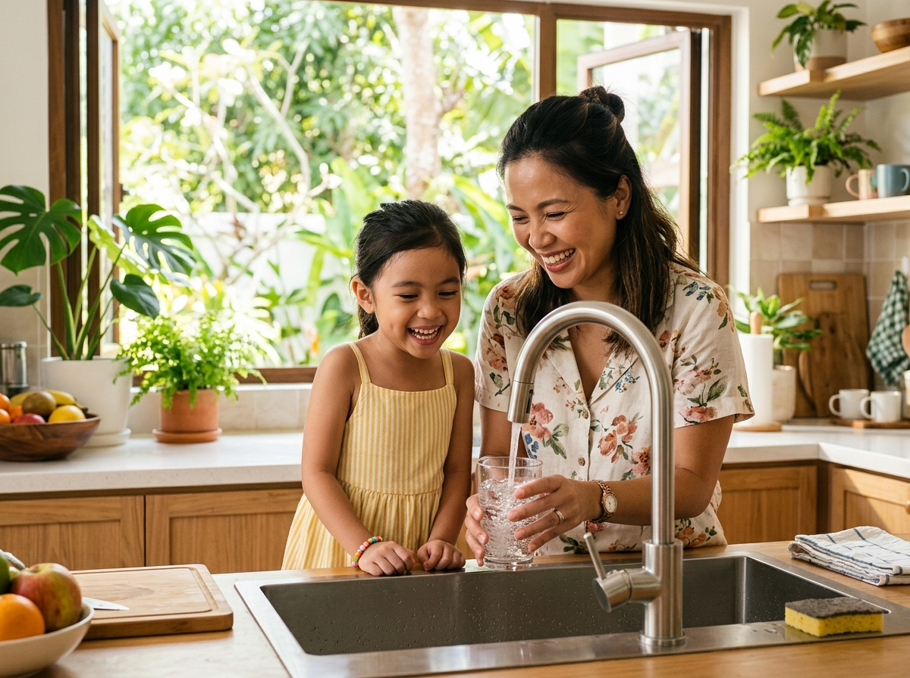
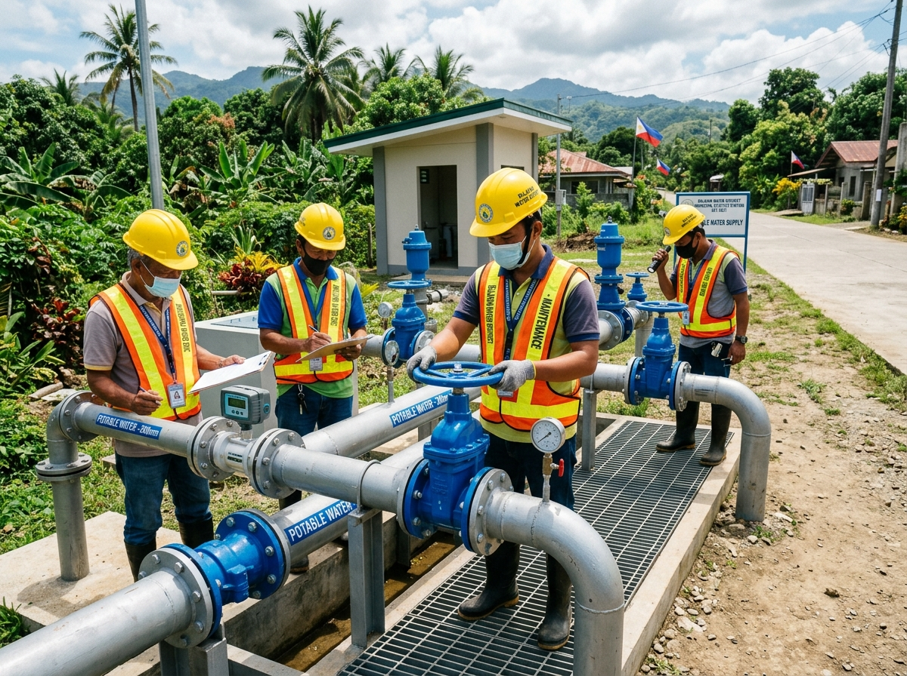
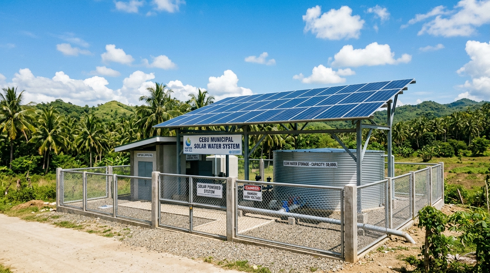

Protected Upland Springs
Natural spring catchments and deep aquifers surrounded by reforested buffer zones in Tabuelan's uplands.
2,640+ native trees planted

Protecting our natural watersheds while delivering safe, solar-pumped, laboratory-tested drinking water to 4,200+ families across all 12 barangays of Tabuelan.

"Healthy upland watersheds mean reliable, crystal-clear water at your kitchen sink. Every tree we protect and every solar pump we build keeps Tabuelan thriving."
We manage the entire water cycle responsibly—protecting upland forests in Kanlim-ao and Maravilla so coastal families in Poblacion, Olivo, and Tigbawan enjoy uninterrupted supply.
Natural spring catchments and deep aquifers surrounded by reforested buffer zones in Tabuelan's uplands.
Daytime solar arrays power our booster pumps, cutting electricity costs and keeping reservoirs full during brownouts.
Multi-stage filtration, precise chlorination, and regular bacteriological testing under DOH-PNSDW standards.
Pressurized HDPE distribution lines with rapid leak response teams keeping Non-Revenue Water (NRW) low.
"Before the upland pipeline extension, we had to fetch water in containers every morning. Now my children can wash up for school right at home."
"Consistent water pressure at our handwashing stations keeps over 600 elementary pupils healthy and hygienic throughout the school day."
"Joining TAWD's tree-planting along our spring buffer zone taught our youth that protecting trees means protecting our barangay's future water."
Service advisories, infrastructure updates, watershed initiatives, and public notices.

Our crew will flush and disinfect the distribution mains during off-peak night hours to keep your tap water crystal clear. Please store enough water ahead of schedule.
Join volunteers on Nov 8 as we plant 600 native seedlings to protect our upland water source.
A damaged 75mm section was replaced. Water pressure returned to 33 psi by 4:15 PM.
Bring your ID and latest bill to the cashier on or before October 31 to keep your discount.
Test pumping from 1:00–3:00 PM. You may notice slight pressure changes during switch-over.
Follow each capital project from groundbreaking to commissioning. Updated monthly for public transparency.

Flagship Green Project • 85% Complete ⚡ Saves ~₱380,000/yr in power • 18.5t CO₂ offsetHigh-efficiency solar arrays power our deep well submersible pump during peak sunlight hours, keeping reservoir tanks full even during CEBECO power interruptions and stabilizing water tariffs.
6.4 km of food-grade HDPE pipeline bringing pressurized tap water to upland sitios.
450+ new households Poblacion Main Lab
Poblacion Main Lab
Digital turbidimeters and incubator units for faster in-house bacteriological testing.
All 12 barangays
Upland Catchments
Planting 5,000 native trees with barangay volunteers to safeguard spring recharge zones.
2,640 / 5,000 plantedCheck the interactive requirement checklist and 4 Citizen's Charter steps for new connections.
Checklist & steps →Compute your estimated monthly bill with Senior/PWD discount and daily liter breakdown.
Open calculator →Pay at our Sitio Ibabao, Poblacion office, Monday to Friday, 8 AM – 5 PM with no noon break.
Location & hours →Help us keep Non-Revenue Water low—report street leaks early or join our barangay watershed tree-planting drives.
Check live pressure across all 12 barangays, estimate your monthly bill, or track your new connection requirements.
Based on LWUA-structured tiered tariff brackets. Adjust your monthly cubic meter (m³) usage below.
| Consumption Bracket | Tariff Rate |
|---|
Note: For estimation purposes only. Official billing statements may reflect meter maintenance fees or arrears if applicable.
Four transparent steps under our Citizen's Charter (RA 11032 — Ease of Doing Business).
File your application form at our Sitio Ibabao, Poblacion office with valid ID and barangay clearance.
~15 minutesOur engineering inspector checks mainline proximity and pipe materials needed for your home.
Within 2 working daysReview the material estimate, pay at our cashier window, and sign the service contract.
Same day (~20 mins)Our field crew installs your calibrated water meter and taps into the distribution line.
Within 3–5 daysSimple habits that lower your monthly water bill while preserving Tabuelan's spring aquifers during dry months.
A single leaking toilet valve or dripping tap wastes up to 150 liters a day. Tightening washers or replacing a worn flapper pays for itself in one billing cycle.
Use covered rainwater drums for watering backyard gardens, washing motorcycles, and flushing outdoor areas instead of treated tap water.
Keep clean, food-grade covered containers ready during scheduled nighttime line flushing so your family has safe drinking water at all times.
Tested regularly against the Philippine National Standards for Drinking Water (PNSDW 2017).
Open access to budgets, procurement notices, and service standards in compliance with DBM, LWUA, and ARTA.
Sitio Ibabao, Poblacion, Tabuelan, Cebu 6044
Open in Maps →
Monday – Friday, 8:00 AM – 5:00 PM (No Noon Break)
Field maintenance crew on standby for urgent mainline leaks
(032) 461 9206 • tawd.cebu@yahoo.com
Official Facebook Page →